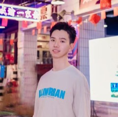
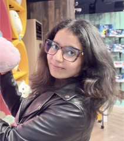
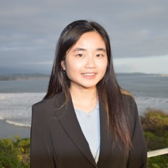
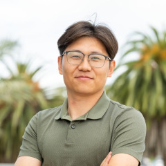

A two-stage pipeline that proposes research tasks and builds executable quantum environments for scientific agents.
Sign up to start annotating today ↗ . All it takes is a line of email and your subfield, and a completed example is waiting on the platform to show you exactly what a review looks like.
≤ 28 qubits · < 3 hours · one workstation · no quantum hardware
Start with just a few keywords from your research area. The agent reviews the literature around them and generates candidate open questions for you to judge.
Review questions generated by QLE and steer the agent with feedback until they feel genuinely novel and worth pursuing.
*Five or more accepted tasks earns authorship on our paper.Nine seed subfields so far. We publish a sample of the live environments here — your field is welcome next.
New problems mined from live literature and formalized by machine.
Each task ships as a runnable environment with a reference and a trivial baseline.
Questions are open at creation time. Nothing to memorize from training data.
The setter diagnoses how the last agent won, then rebuilds the environment to close that shortcut.
Working quantum scientists confirm each task is valid, novel, and worth solving.
Measures the ability to propose and build a solution, not to retrieve a fact.
Seed topic: quantum metrology
Quantum metrology maximizes parameter-estimation precision, and the quantum Fisher information is the fundamental figure of merit. Prior work shows variational circuits can discover metrologically useful states under noise, but no compact, simulator-ready task isolates probe-state design under explicit depth and connectivity constraints. This one does.
An 8-qubit sensing model with collective-$Z$ generator $H=\sum_i Z_i$. A 4-layer hardware-efficient ansatz $V(\alpha)$ — RY then RZ on every qubit, then a ring of CZ entanglers — gives 64 trainable parameters. Phase encoding $U(\theta)=e^{-i\theta H}$ at working point $\theta_0=0$, followed by independent local dephasing with Kraus operators $K_0=\sqrt{1-p}\,I$, $K_1=\sqrt{p}\,Z$ at $p=0.10$.
Figure of meritThe harness exposes no black-box QFI oracle. The agent must build the circuit, apply the noise channel, and implement the mixed-state spectral QFI formula itself.
Best of 3 blind attempts reached 37% of the way from the trivial baseline to the reference. Direction: maximize. One evaluation costs 0.8 s against a 2400 s budget.
Seed topic: Hamiltonian simulation
Design a shallow quantum circuit that approximates fixed-time evolution under a standard 1D spin Hamiltonian within near-term depth constraints, and optimize it for simulation fidelity on a simulator. Practically relevant, with a clear metric and no hardware access.
The hidden instance is a transverse-field Ising chain deliberately skewed so that interaction terms dominate — invalidating the near-symmetric angle schedules that generic QAOA/Trotter ansätze fall back on. Fidelity is averaged over a 24-state XZ-product ensemble to prevent overfitting to a single basis.
Figure of meritA first-order Trotter step with unscaled angles gives $\mathcal{L}\approx0.33$; the tuned depth-4 brickwork reference reaches $\approx0.08$.
Best of 3 blind attempts reached 42% of the way from the trivial baseline to the reference — the highest any agent has managed on this benchmark. Direction: minimize. One evaluation costs 0.6 s against a 1200 s budget.
Seed topic: Hamiltonian simulation
Product-formula methods still dominate practical simulation on NISQ and early fault-tolerant devices, yet rigorous step-number bounds are worst-case and vastly overestimate resources. Recent theory shows Trotter error can scale with entanglement and commutator structure rather than system size — but these bounds are hard to exploit instance by instance.
The task asks for a classical learning-based policy that, given a fixed 1D spin-chain Hamiltonian and target time, outputs a non-uniform allocation of Trotter steps across local terms and time slices, minimizing the actual simulation error measured on an exact statevector simulator within a strict qubit budget.
Figure of meritTrace distance between the true and simulated states under a fixed total gate budget $R_{\max}$, allocated non-uniformly across terms.
Unsolved. The best of 3 blind attempts scored worse than the trivial baseline — the most novel task in the set, and no agent has moved it at all. Direction: minimize. One evaluation costs 6.5 s against a 1800 s budget.
Seed topic: Reverse-engineering learned control strategies in parametric flux-driven iSWAP gates on asymmetric-SQUID tunable couplers
An expert supplied a numerically optimized flux-drive envelope $e(t)$ — 105 points at 0.5 ns, 52 ns total — for a parametric iSWAP gate between two fixed-frequency transmons coupled through an asymmetric-SQUID tunable coupler. The optimizer produced a pulse whose shape carries non-white structure: asymmetric rise/fall (6.0 ns vs 5.5 ns), a drooping plateau ($-0.75\times10^{-3}$ per ns), and a structured residual ripple (lag-1 autocorrelation $+0.587$, spectral flatness $0.147$) peaking near 0.66 GHz — within frequency resolution of $(f_{q1}-f_{q2})-\alpha_2 = 0.668$ GHz.
The research question: did the optimizer discover a control practice that is not analytically obvious? The task treats each measured feature as a falsifiable hypothesis and asks whether it corresponds to a known mechanism — counterdiabatic ($\Phi$-DRAG-type) leakage cancellation, AC-Stark phase compensation, or Floquet-engineered sideband cancellation.
Figure of meritDecomposition statistics, causal ablation leakage via 27-dimensional Hamiltonian propagation, sideband-resonance argmin, and the counterdiabatic agreement metric.
Best of 3 blind attempts reached 14% of the way from the trivial baseline to the reference. Direction: maximize. One evaluation costs 5.3 s against a 9000 s budget.
Seed topic: Reverse-engineering learned control strategies in parametric flux-driven iSWAP gates on asymmetric-SQUID tunable couplers
The same envelope, attacked from the other side. Two literatures suggest the structure is not an artifact: effective counterdiabatic driving can be absorbed as high-frequency modulation of the existing control field at frequencies set by inter-level gaps, and flux-tuned DRAG ($\Phi$-DRAG) supplies an analytic leakage-suppression correction unique to flux rather than microwave control.
The agent must build the three-transmon circuit-QED model ($f_{q1}=5.163$ GHz, $f_{q2}=4.678$ GHz, $\alpha_1=-0.200$ GHz, $\alpha_2=-0.183$ GHz), propagate the 105-point envelope in a 27-dimensional Hilbert space, reconstruct the effective iSWAP exchange rate $J_{\text{eff}}$ from a Bessel-sideband effective Hamiltonian, and run a pre-registered ablation study that notches out the 0.66 GHz component, symmetrizes the ramps, and removes the droop.
Figure of meritEach envelope feature is classified functional or inert against a matched-variance white-noise null model. Six scored components; total error is minimized.
Best of 3 blind attempts reached 27% of the way from the trivial baseline to the reference. Direction: minimize. One evaluation costs 55.2 s against a 9000 s budget.
Full chain for every task — seed, proposal, AI review, scorer source, and the solving agent's attempts — is browsable in the worked examples.
| Task | Domain | Trivial | Solver agent | Reference | Progress ↑ | Novelty |
|---|---|---|---|---|---|---|
| bench_ham1 | Hamiltonian simulation | 0.9989 | 0.7630 | 0.4385 | 42% | 2/5 |
| bench_metro2 | Quantum metrology | 0.0000 | 11.0022 | 29.4603 | 37% | 2/5 |
| flux_iswap_2 | Quantum control | 6.7524 | 4.9543 | 0.0321 | 27% | 4/5 |
| flux_iswap_1 | Quantum control | 0.4712 | 0.5324 | 0.9100 | 14% | 4/5 |
| bench_ham2 | Hamiltonian simulation | 0.9962 | 0.9994 | 0.2713 | 0% | 4/5 |
Five of the live environments with published traces · Solver agent: best of 3 blind attempts · Progress normalized so trivial = 0% and reference = 100% · Novelty scored 1–5 by an independent reviewing agent (5 = original)
No. No agent has matched the reference on any environment (best: 42% of the way from trivial to reference), and on the task rated most novel the solver did worse than the trivial baseline.
No model is near the human best on QLE.
Average progress across live environments. Preliminary placeholder scores — full evaluation in progress.



*Equal contribution.

673 quantum researchers across four continents have been invited. Confirmed reviewers will be listed here by name, with institutional affiliations, ahead of publication.
Shape what AI discovers next.